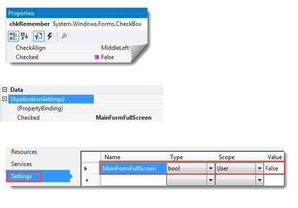

Windows forms make form cover taskbar
Description
This sample shows how to make a form cover the entire screen with an option to cover or not cover the Windows task bar. There are many reasons for this but the main reason is a form has many controls that requires either the user scrolls through the controls or simply depresses the X in the window title bar to maximism the window.
With that we must allow the user to remember this to either startup with maximized or not as the user may be fine with scolling so that when working with one monitor they can share the screen with another application that is used in tangent with your application.
Let's get started, we could place all the code presented in the attached solution directly into a form and be good yet it's a good idea to place the code into another class so that it is reusable and does not clutter up the form with this code. Best practices dicate place very little code into a form so that is what I have done with a slight twist which is place the code into a class project where each method is done as a language extension method.
Imports System.Windows.Forms Public Module FormExtensions Private Declare Function SetWindowPos Lib "user32.dll" _ Alias "SetWindowPos" (ByVal hWnd As IntPtr, ByVal hWndIntertAfter As IntPtr, ByVal X As Integer, ByVal Y As Integer, ByVal cx As Integer, ByVal cy As Integer, ByVal uFlags As Integer) As Boolean Private HWND_TOP As IntPtr = IntPtr.Zero Private Const SWP_SHOWWINDOW As Integer = 64 ''' <summary> ''' Place form into full screen ''' </summary> ''' <param name="sender"></param> ''' <param name="TaskBar">True to hide Windows TaskBar</param> ''' <remarks> ''' Showing this task bar may not work fully but that is not the ''' point here, the point is to cover the task bar with a option ''' to expose it is secondary. ''' </remarks> <Runtime.CompilerServices.Extension()> Public Sub FullScreen(ByVal sender As Form, ByVal TaskBar As Boolean) sender.WindowState = FormWindowState.Maximized sender.FormBorderStyle = FormBorderStyle.None sender.TopMost = True If TaskBar Then SetWindowPos(sender.Handle, HWND_TOP, 0, 0, Screen.PrimaryScreen.Bounds.Width, Screen.PrimaryScreen.Bounds.Height, SWP_SHOWWINDOW ) End If End Sub ''' <summary> ''' Restore to original size/position ''' </summary> ''' <param name="sender"></param> ''' <remarks></remarks> <Runtime.CompilerServices.Extension()> Public Sub NormalMode(ByVal sender As Form) sender.WindowState = FormWindowState.Normal sender.FormBorderStyle = FormBorderStyle.FixedSingle sender.TopMost = True End Sub End Module
using System; using System.Windows.Forms; namespace WinFormMaxLibrary { public static class FormExtensions { [System.Runtime.InteropServices.DllImport("user32.dll", EntryPoint = "SetWindowPos", ExactSpelling = true, CharSet = System.Runtime.InteropServices.CharSet.Ansi, SetLastError = true)] private static extern bool SetWindowPos( IntPtr hWnd, IntPtr hWndIntertAfter, int X, int Y, int cx, int cy, int uFlags); private static IntPtr HWND_TOP = IntPtr.Zero; private const int SWP_SHOWWINDOW = 64; /// <summary> /// Place form into full screen /// </summary> /// <param name="sender"></param> /// <param name="TaskBar">True to hide Windows TaskBar</param> /// <remarks> /// Showing this task bar may not work fully but that is not the /// point here, the point is to cover the task bar with a option /// to expose it is secondary. /// </remarks> public static void FullScreen(this Form sender, bool TaskBar) { sender.WindowState = FormWindowState.Maximized; sender.FormBorderStyle = FormBorderStyle.None; sender.TopMost = true; if (TaskBar) { SetWindowPos(sender.Handle, HWND_TOP, 0, 0, Screen.PrimaryScreen.Bounds.Width, Screen.PrimaryScreen.Bounds.Height, SWP_SHOWWINDOW); } } /// <summary> /// Restore to original size/position /// </summary> /// <param name="sender"></param> /// <remarks></remarks> public static void NormalMode(this Form sender) { sender.WindowState = FormWindowState.Normal; sender.FormBorderStyle = FormBorderStyle.FixedSingle; sender.TopMost = true; } } }
Imports System.Windows.Forms Public Module FormExtensions Private Declare Function SetWindowPos Lib "user32.dll" _ Alias "SetWindowPos" (ByVal hWnd As IntPtr, ByVal hWndIntertAfter As IntPtr, ByVal X As Integer, ByVal Y As Integer, ByVal cx As Integer, ByVal cy As Integer, ByVal uFlags As Integer) As Boolean Private HWND_TOP As IntPtr = IntPtr.Zero Private Const SWP_SHOWWINDOW As Integer = 64 ''' <summary> ''' Place form into full screen ''' </summary> ''' <param name="sender"></param> ''' <param name="TaskBar">True to hide Windows TaskBar</param> ''' <remarks> ''' Showing this task bar may not work fully but that is not the ''' point here, the point is to cover the task bar with a option ''' to expose it is secondary. ''' </remarks> <Runtime.CompilerServices.Extension()> Public Sub FullScreen(ByVal sender As Form, ByVal TaskBar As Boolean) sender.WindowState = FormWindowState.Maximized sender.FormBorderStyle = FormBorderStyle.None sender.TopMost = True If TaskBar Then SetWindowPos(sender.Handle, HWND_TOP, 0, 0, Screen.PrimaryScreen.Bounds.Width, Screen.PrimaryScreen.Bounds.Height, SWP_SHOWWINDOW ) End If End Sub ''' <summary> ''' Restore to original size/position ''' </summary> ''' <param name="sender"></param> ''' <remarks></remarks> <Runtime.CompilerServices.Extension()> Public Sub NormalMode(ByVal sender As Form) sender.WindowState = FormWindowState.Normal sender.FormBorderStyle = FormBorderStyle.FixedSingle sender.TopMost = True End Sub End Module
So by placing the code into a class project allows us to use the methods in other applications.
The screenshot below shows the main form. The button labeled "Full" works in tangent with the CheckBox labeled Taskbar. Press this button with the check box checked will cover the screen and Window's taskbar while un-checking the check box will allow the taskbar to display but when testing the code the main form may slightly overlap the taskbar yet for the focus here the intent is to cover the taskbar so let's not get hung up on this.
The button labeled "Show form" simply shows a modal form that works no different than in a regular form but we must change the TopMost property from the main form being top most to the child form then to ensure we revert back to the main form I wrapped the code in a try/finally.
The "Detect" button indicate the form's state for demo purposes.
The CheckBox "Remember full screen" we databind to a property under the project properties were the data binding is done via selecting the checkbox, select properties then set as per figure 2

Figure 2

When examining the code in the vb.net or c# main form, note all you really need is a call to Me.FullScreen(true/false) or this.FullScreen(true/false) to max the form or me.NormalMode/this.NormalMode()